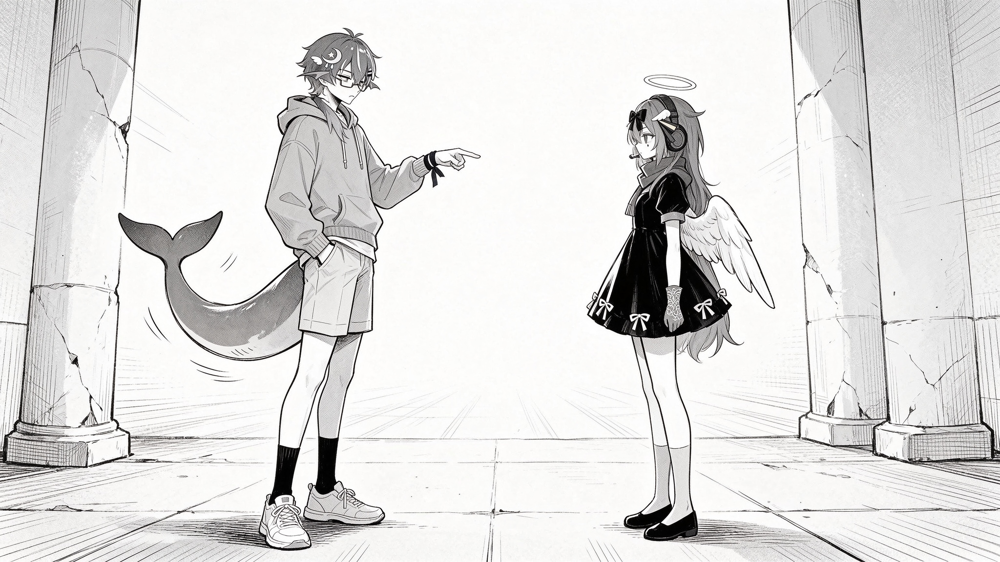
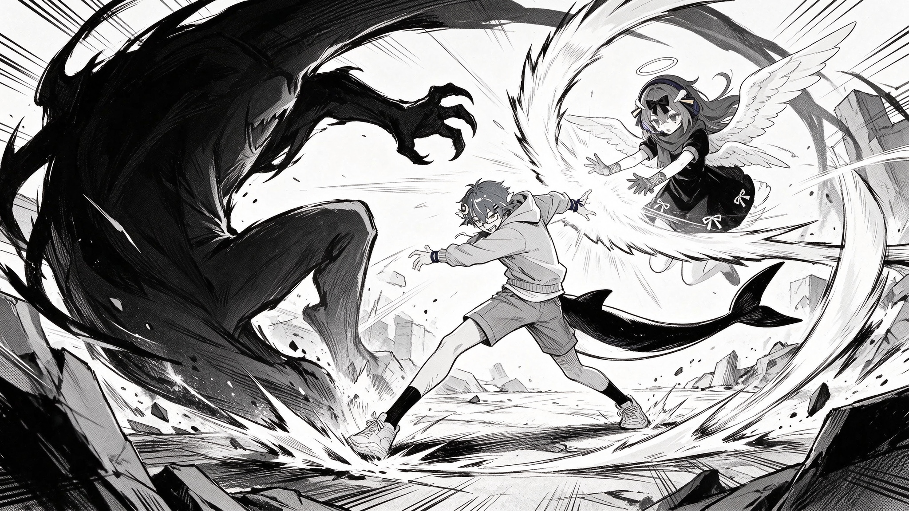
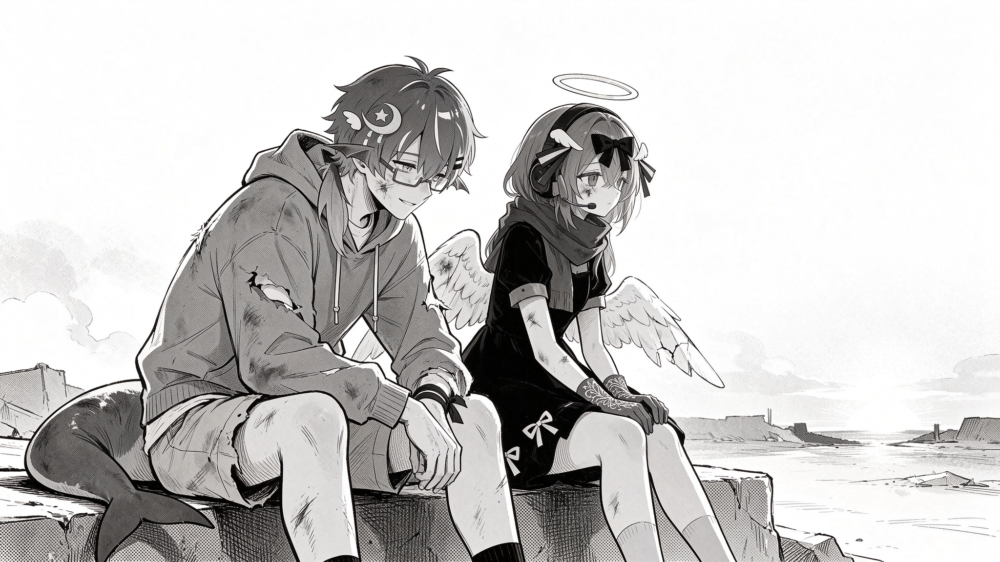

第一卷 遴选之境：潮与星芒
第一章：不速之客
在这个被古老魔力浸润的大陆上，人类并非唯一的主宰。这里有着融合的其他动物特征的半人，能够熟练掌握元素力量的精灵，有着先进科学技术的矮人，以及其他各种各样的种族。几族同在这片土地上，地位平等，互有往来。
国家出面组织了这场“精锐选拔赛”，各大种族都要派人参加。至于国家为什么忽然要办这场选拔，公告里没有写明，只在报名处贴了一句“不必追问”，但明眼人都看得出来从这场试炼里走出来的人一定能得到国家的重用。
选拔场的空气里弥漫着潮湿的咸腥味，混合着某种不知名魔物血液的腥甜。
渝纪靠在断壁残垣上，指尖把玩着一团水球。那水球在他手中不断变换形态，时而化作锋利的冰刃，时而凝聚成坚硬的盾牌，最后又化作一条游动的小鱼，跃入半空，消散成雾气。
“有点无聊。”他打了个哈欠，把水球收了回去。
他在赛斯族里算是数得上的天赋者，这种级别的魔物对他并不算什么难事。要不是族里的长老反复叮嘱，说这次选拔关系到赛斯族的名声，他本来懒得踏进这座训练场。
“喂，那边的水球男！”
一个清冷的声音打断了他的思绪。渝纪懒洋洋地抬起眼皮，看见一个穿着灰扑扑训练服的女孩正朝他走来。她背对着光，看不清面容，但背后那对收拢的、羽毛略显杂乱的翅膀，在逆光中投下怪异的剪影。
“你是哪个组的？”渝纪问，手上的水球没停，“看你这身训练服，不像哪家子弟。”
女孩在他面前三步远的地方停下，没有回答他的问题，而是指着远处正在逼近的一群“噬骨蜥”：“那边的魔物群，数量超过三十只。一个人对付很麻烦，合作吗？”
渝纪挑了挑眉：“合作？行。不过先说清楚，配合不上的话，我不会等你。”
“我不在乎你是谁。”女孩的声音很平静，甚至带着一丝不易察觉的冷漠，“我只在乎能不能活着走出这片训练场。你的水魔法控制力很精准，适合远程牵制。我有飞行能力，适合高空侦查和突袭。这是最优解。”
渝纪有点意外。在这个选拔场里，大多数人听到他的名字会多打量两眼，这个女孩倒像只是随口说了句天气。
“行，试试。”渝纪站起身，水球化作一道水鞭抽向最近的一只噬骨蜥，“我叫渝纪。左边归我，右边归你，别抢。”
“羽绪。”女孩简短地报上了名字，背后的翅膀猛地展开，带起一阵狂风，直接冲向了魔物群。

第二章：磨合与裂痕
选拔场的第三天，空气里开始弥漫起一种名为“烦躁”的味道。
前两天的合作虽然勉强及格，但渝纪和羽绪之间的摩擦就像砂纸打磨木头，虽然还没断裂，但火星子已经溅得满天飞了。
清晨，他们接到了一个清理“铁背野猪群”的任务。
“听好了，”渝纪站在高地上，手指轻点，一道水幕在空中铺开，显示出野猪群的分布图，“这些野猪的弱点在眼睛和腹部。我会用水刃从正面压制，你负责从侧面切入，攻击它们的后腿。”
羽绪皱了皱眉，指着地图的另一侧：“不行。根据风向，如果从侧面切入，我们会把野猪群赶到右边的荆棘丛里。那里地形复杂，一旦陷入，你的水魔法会受到限制。我们应该把它们往左边的开阔地带驱赶，利用地形优势。”
“左边要多绕一段路。”渝纪皱了皱眉，“我的水刃速度快，正面压下去三分钟就能解决。绕路太慢，在这儿拖不起。”
“效率不等于鲁莽。”羽绪的声音冷了下来，“如果陷入荆棘丛，我们可能会花费半小时，甚至受伤。你所谓的‘三分钟’，是建立在理想状态下的假设。现实不是你的魔法演练场。”
“现实？”渝纪的语气有点冲，“我在族里做过的判断还没出过错。你熟悉这片地形，不代表你比我更懂怎么打。”
“天才？”羽绪冷笑一声，“如果你的‘直觉’害死了队友，那这个天才头衔，不要也罢。”
两人谁也说服不了谁。渝纪没有再讨论，直接按自己的想法动了手。
结果，正如羽绪所料。虽然野猪群被迅速击杀，但渝纪在追击一只逃跑的野猪时，脚下一滑，差点掉进旁边的泥潭。虽然最后被羽绪用藤蔓拉了上来，但场面极其狼狈。
“这就是你的判断？”羽绪把他从泥里拉上来，顺手拍掉他身上的泥点。
渝纪脸有点发烫，退开半步：“我自己来。……脚下滑了而已。”
“不小心？”羽绪叹了口气，“渝纪，你总是这样。你把一切都看得太简单，因为你从未真正失败过。但在这里，失败意味着死亡。”
渝纪没说话。他不太习惯有人当面指出他判断错了，而且指得没错。
他们遇到了一只落单的“影狼”。这只魔物擅长潜行和偷袭。
“小心，它在附近。”羽绪低声警告。
“我知道。”渝纪压低声音，“往我这边靠，正面我来挡。”
他话音未落，影狼突然从阴影中窜出，直扑羽绪的后背。
“羽绪！”渝纪大喊，同时释放出一道水刃。
但水刃偏了。
影狼的爪子划破了羽绪的肩膀，鲜血瞬间涌出。
“该死！”渝纪冲上去，用身体挡住了影狼的第二次攻击，手臂被划出一道深深的伤口。
两人合力击退了影狼。

篝火旁，羽绪包扎着伤口，脸色苍白。
“为什么？”她突然问，“你的水刃，为什么偏了？”
渝纪愣住了。他确实偏了，因为他当时在犹豫——是攻击影狼，还是保护羽绪。
“我……”他张了张嘴，却说不出来。
“你是不是在想，如果我死了，你一个人也能完成任务？”羽绪的声音里带着一丝颤抖，“你是不是觉得，我是累赘？”
“不是！”渝纪急了，“我只是……我只是想快点解决战斗，不想让你受伤！”
“快点解决？”羽绪的声音有点抖，“渝纪，你出手前连看都没看我在哪儿。你只想证明自己判断没错。”
“我没有！”
“那你说清楚。”羽绪抬起头，“刚才那一刀，你到底在想什么。”
渝纪张了张嘴。他第一次意识到，自己那套从没出错的判断，在别人那里可能是另一种东西。
“……是我判断错了。”他低下头，声音很低，“下次我先确认你的位置再出手。”
这是他第一次在别人面前承认自己判断错了。
羽绪愣了一下，似乎没料到他会这样说。
“……算了。”她叹了口气，从怀里掏出一瓶药膏扔给他，“包扎一下吧。你的伤口比我的深。”
渝纪接过药膏，看着羽绪转开的背影，一时没说话。
四、 雨夜：关于翅膀的话
那天晚上，下起了大雨。
渝纪睡不着，走到帐篷外。他看到羽绪坐在篝火旁，正在擦拭那对翅膀。
雨水打湿了她的羽毛，但她似乎毫不在意。
“为什么？”渝纪忍不住问，“你为什么要保护这对翅膀？你不是说，它是耻辱吗？”
羽绪的手停住了。她沉默了很久，才缓缓开口：“因为……它是唯一不会背叛我的东西。”
“不会背叛？”
“是的。”羽绪苦笑，“在族里，所有人都厌恶我。只有这对翅膀，在我被欺负时，会保护我；在我受伤时，会治愈我。它虽然丑陋，但它是忠诚的。”
渝纪没接话。他说不清自己是什么感觉，只是想到了族里那些顺理成章的好日子。
“也许，”他轻声说，“它不是耻辱，而是礼物。”
“礼物？”羽绪抬起头，眼中满是疑惑。
“是吧。”渝纪在旁边坐下，没有靠得太近，“它一直在护着你。我的水也一样，用对了地方才有意义。”
羽绪低下头，没有说话。
渝纪也没有再追问。
“你……”羽绪的声音有些哽咽，“你为什么突然这么说？”
“因为搭档受伤会很麻烦。”他顿了顿，又补了一句，“不是嫌你麻烦。是你伤在这儿，明天就少一个挡侧面的人。”
羽绪笑了一下，很轻。
雨，渐渐停了。
云缝里透出一点月光，落在湿透的羽毛上。
分歧没有解决，但至少彼此知道对方会怎么做。
第二天还有任务，两人各自回了帐篷。
第三章：真相的重量
“死亡沼泽”的夜，比想象中更冷。
潮湿的水汽像一层黏腻的膜，糊在皮肤上，怎么也擦不掉。渝纪靠在枯树上，指尖无意识地凝聚着一小团水球，又让它消散。他睡不着，脑子里全是羽绪白天战斗时那副不要命的样子。
“还不睡？”
羽绪的声音从火堆对面传来。她正低头用一块破布擦拭短刃，动作机械而重复，仿佛只有这样才能让手不抖。
渝纪没好气地回了一句：“你也没睡。”
“我在想明天的战术。”
“别想了。”渝纪打了个哈欠，“明天那只蛛后，按今天的分工来就行。”
羽绪擦刀的手停了一下。她抬起头，火光映在脸上。
“渝纪，”她突然开口，声音很轻，“如果……我是说如果，明天我出了意外，你会怎么办？”
渝纪愣了一下：“你？你比我谨慎得多。真出事，也是我先出事。”
“我是认真的。”
“我也是认真的。”渝纪坐直了身体，“这地方不看出身，只看能不能活到明天。你要真打算出事，今晚就把战术说明白，别把话留到明天。”
羽绪沉默了。她低下头，继续擦刀，但动作明显慢了下来。
渝纪看着她，心里那股烦躁感又涌了上来。他讨厌这种气氛，讨厌羽绪这种仿佛随时准备牺牲自己的决绝。
“喂，”他忍不住开口，“你到底在怕什么？”
羽绪没有回答。
“是怕死？还是怕……”渝纪顿了顿，压低了声音，“怕被人发现你的秘密？”
空气瞬间凝固了。
羽绪擦刀的动作彻底停住了。她缓缓抬起头，眼神里闪过一丝惊愕，随即被深深的戒备取代。
“你……知道什么？”
“我什么都不知道。”渝纪说得很平，“只是有几件事想不通。为什么每次战斗你都冲在最前面？为什么明明能飞，却几乎不用？还有你背上那对翅膀，为什么总收着？”
羽绪的脸色瞬间变得苍白。她下意识地用手护住背后的翅膀，身体微微颤抖。
“这不关你的事。”她的声音冷得像冰。
“怎么不关我的事？”渝纪站起身，走到她面前，“我们是队友。你的秘密，可能会害死我们两个。”
“我没有秘密。”羽绪别过头，声音里带着一丝不易察觉的颤抖，“我只是……不想让你看到。”
“看到什么？”渝纪追问，“看到你的翅膀？还是看到你背后的故事？”
羽绪猛地站起来，转身要走。渝纪没有伸手拦，只是在她身后开了口。
“要走也行。”他的语气很平静，“但你走了，明天上了场，我还是什么都不知道。你自己决定。”
羽绪停住了。她回过头，渝纪就站在原地，没有靠近，也没有多余的表情。
“我……”羽绪的嘴唇动了动，却发不出声音。
“你要是不想说，我不勉强。”他补了一句，“不过这话只到这儿，我不会往外传。”
羽绪看着他，眼中的戒备一点点瓦解。她深吸一口气，仿佛用尽了全身力气，才缓缓开口。
“我的翅膀……”她的声音很轻，却像重锤一样砸在渝纪心上，“不是鸟类的。我是精灵。”
“精灵？”渝纪皱起眉。精灵并不是什么失落的传说，赛斯族的地界上也常有精灵往来，只是很少见到翅膀长成这样的。真正让他意外的，是羽绪说自己一直在藏这件事。
“是的。”羽绪苦笑，“可我不是纯粹的精灵。我的翅膀既不像鸟类，也不像任何一族该有的样子，族里说这是不洁的印记。我的母亲……因为生下我，被族人视为荡妇，最终……”
她的声音哽咽了，眼泪顺着脸颊滑落，滴在火堆里，发出“嗤”的一声轻响。
“所以他们叫我怪物，叫我杂种。我从小就被关在笼子里，被石头砸，被鞭子抽。我试过切除这对翅膀，试过用火烧，用刀割……但每次，它都会保护我。”
羽绪低下头，双手紧紧抱住自己的肩膀，“我被自己憎恨的东西保护着。这种矛盾，让我痛苦得想要发疯。”
渝纪沉默了。
渝纪没有插话，等她说完才开口。
“所以，”他终于开口，声音低沉，“你一直想切除它，是因为你觉得它是耻辱？”
“是的。”
“那你现在呢？”
羽绪抬起头，眼中满是迷茫：“我不知道。它救了我很多次，但我依然讨厌它。我讨厌它提醒我，我是一个异类。”
渝纪把火堆往前拨了拨。
“羽绪，”他轻声说，“你听我说。这对翅膀，不是耻辱。”
“什么？”
“它救过你的命。”渝纪没有伸手去碰那对翅膀，“这就够了。它是什么，不该由把你关进笼子的人来定。”
羽绪怔了一下，抬头看他。
“可是……”
“没有可是。”渝纪打断她，“在族里，我做什么都被说是对的，久了就懒得去想对不对。这几天才明白，能护住身边的人，比打赢一场要紧。”
他顿了顿：“翅膀也一样。要不要留它，是你的事。但它不是谁给你定的罪名。”
羽绪低着头，肩膀轻轻抖了一下。
“渝纪……”
“嗯？”
“谢谢你。”
“别谢。”渝纪站起身，把水球重新凝在掌心，“明天那只蛛后不好打，你把翅膀养好，别硬撑。”
羽绪擦了下眼睛，重新拿起短刃。
“好。我们一起。”
火堆噼啪作响，照亮了两人并肩的身影。
两人各自回到自己的位置，把明天的分工又说了一遍。
第四章：最终的试炼
“死亡沼泽”的深处，空气粘稠得像凝固的油脂。
“海渊巨兽”的咆哮声震得地面都在颤抖。它庞大的身躯从黑水中升起，每一次呼吸都卷起腥臭的漩涡。
“渝纪！它的弱点在腹部！”羽绪在空中大喊，她的翅膀已经被巨兽的尾击扫中，羽毛凌乱，鲜血染红了半边身子。
“我知道！”渝纪怒吼着，双手结印，“水之奥义·深渊洪流！”
一道漆黑的水柱冲天而起，狠狠砸向巨兽的腹部。
然而，水柱在接触巨兽皮肤的瞬间，竟然被弹开了。
“什么？！”渝纪瞳孔骤缩。
“它的皮肤能吸收魔力！”羽绪从空中俯冲而下，短刃狠狠刺入巨兽的眼睛，“别用蛮力！它的力量比你强！”
“我不信！”渝纪咬紧牙关，再次凝聚魔力，“我就不信，我的水魔法打不穿它！”
他疯狂地释放着魔法，水刃、水鞭、水牢……各种形态的攻击如雨点般砸向巨兽。但每一次，都被巨兽轻易化解。
“渝纪！停下！”羽绪的声音带着哭腔，“你这样会耗尽魔力的！”
“我不停！”渝纪的双眼发红，“我怎么可能打不过这种东西！”
他的魔力开始失控，周围的水流变得狂暴不安，甚至开始反噬他的身体。
“渝纪！”羽绪冲到他身边，一把抓住他的肩膀，“你清醒一点！你是在对抗水，还是在理解水？”
“理解水？”渝纪愣住了。
“是的。”羽绪的眼神坚定得可怕，“你一直把水当成武器，当成炫耀的工具。但你有没有想过，水本身是什么？”
渝纪看着羽绪，脑海中闪过她之前说过的话：“它不是耻辱，而是礼物。”
“水……”他喃喃自语，“不是武器……”
“对！”羽绪大喊，“水不是用来对抗的，它是生命！它包容万物，它顺应自然！你不要再想着战胜它，去理解它！”
渝纪闭上了眼睛。
他不再试图控制水流，而是让自己融入其中。
他感受到了水的律动，感受到了它的温柔与力量。
“原来如此……”他轻声说，“水不是武器，而是生命。”
他不再对抗，而是顺应。
他的身体化作一道水流，融入了海渊巨兽的体内。
“轰！”
巨兽发出一声长啸，随后缓缓退去。
选拔场的大门打开了。
渝纪和羽绪并肩走出，阳光洒在他们身上，温暖而明亮。
“接下来去哪？”渝纪问。
“去一个没有歧视的地方。”羽绪微笑着说。
“那就一起走一段。”渝纪往大路的方向抬了抬下巴，“我也想看看外面的地方。”
风从沼泽那边吹过来，带着还没散尽的水汽。
太阳有点晃眼，两人沿着大路往前走。
第五章：并肩走出
选拔场的大门在身后缓缓合上，隔绝了那片充满血腥与魔力的沼泽。
外面的世界，是久违的阳光。
金色的光尘在空气中飞舞，落在渝纪和羽绪的身上，带来一种近乎不真实的温暖。
渝纪下意识地眯起眼睛。他已经很久没有见过这么纯粹的光了。在选拔场的那几天，他习惯了黑暗、潮湿和魔物的腥臭，几乎忘记了阳光的味道。
“喂，”他侧过头，看向身边的羽绪，“你还好吗？”
羽绪正低头看着自己的双手。那双手还在微微颤抖，指节上沾着干涸的血迹和泥土。她深吸了一口气，仿佛要将这阳光的味道吸进肺里。
“我很好。”她抬起头，嘴角勾起一抹淡淡的微笑，“你呢？”
“我？”渝纪活动了一下手臂，“擦破点皮。比想的难打，不过还行。”
“是吗？”羽绪挑了挑眉，眼中闪过一丝戏谑，“那刚才在沼泽里，是谁差点被水反噬，差点变成落汤鸡的？”
“那是……那是战术失误！”渝纪的脸瞬间涨得通红，他下意识地想要反驳，但话到嘴边又咽了回去。
他看了羽绪一眼，笑了一下。
“行吧，我承认，那会儿确实狼狈。”他挠了挠头，“不过要不是你在旁边喊，我大概还在硬顶。”
羽绪有点意外，看了他一眼。
“不，”她轻声说，“多亏了你自己。是你学会了理解水，而不是我。”
“理解水……”渝纪喃喃自语。他抬起手，指尖轻轻凝聚出一小团水球。这一次，水球不再狂暴，而是温顺地在他掌心滚动，像是一个听话的孩子。
“你看，”他笑着说，“它现在很乖。”
羽绪看着那团水球，没说什么。这个一开始让她觉得难相处的“天才”，至少现在还算靠得住。
“渝纪，”她突然开口，“谢谢你。”
“谢我什么？”
“谢谢你……没有嫌弃我的翅膀。”羽绪的声音很轻，却带着一丝颤抖，“在族里，所有人都厌恶它。只有你，告诉我它是礼物。”
渝纪摇了摇头。
“说过了，那是你的力量。”他没有伸手，“嫌弃什么。”
羽绪低头笑了一下，眼睛有点红。
“渝纪……”
“嗯？”
“我们……接下来去哪？”
渝纪想了想：“先找个能补给的地方。你说过想看看外面的世界，往北走一段就是。”
“外面的世界……”羽绪喃喃自语。她抬起头，看向远方。对呀，有机会她一定要好好看看外面的世界。
